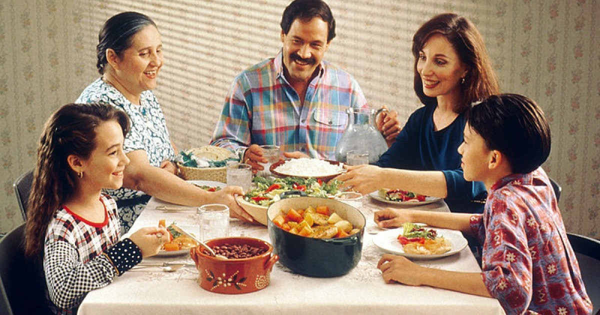

CONOCE A MI FAMILIA

ACERCA DE MI FAMILIA
Mi familia es parte fundamental en mi vida .Somos una familia relativamente unida que se apoya en cada proyecto y sueño.
Cada miembro de mi familia tiene caracteristicas especiales que me han ayudado a crecer como persona.
Valoramos mucho la educacion, el respeto mutuo y el tiempo que pasamos juntos.
Mi familia siempre me ha motivado a seguir mis estudios en Ingenieria de Sistemas y a perseguir mis metas profesionales.
MIEMBROS DE MI FAMILIA
FAMILIAR
DESCRIPCION
EDAD
Abuelo Daniel
Trabajador jubilado muy dedicado a la familia.
80
Abuela Sabina
Mi abuela cariñosa y muy dedicada ala familia y buena ama de casa.
79
Tia Barbara
La mayor de todas es muy buena siempre me apoya cuando padres no estan aqui conmigo y es muy buena madre tambien lucha mucho por sus hijos.
58
Mama Floriana
Cariñosa y siempre dispuesta a ayudar. Es la que mantiene unida a la familia.
52
Tia Francis
Muy trabajadora y muy exigente pero muy buena apoyando a la familia es muy extricta pero muy buena.
48
Tio Paul
Muy trabajador y colaborador por la familia y siempre ayudando en las buenas y en las malas.
40
Tia Magui
Es muy buena siempre ah estado conmigo en las buneas y malas siempre apoyandome en todo momento y estando ahi par alo momentos dificiles.
35
Primito Yassir
Un niño muy despierto y divertido estudioso y le gusta mucho el futbol y tambien los dinosaurios.
5
MAS FOTOS Y VIDEOS DE MI FAMILIA
